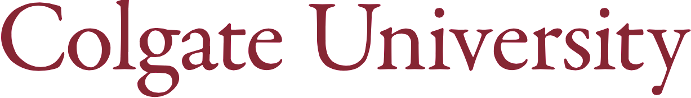

New York, NY
Dedicated analytical professional who frequently steps outside the scope of responsibilities and leverages data to action company-wide goals of churn, product adoption, and revenue growth with a client service mindset.
Delivers data-driven insights and leads special projects to drive revenue impact for Enterprise clients. Creates tools and automation using Python and SQL to streamline processes and provide actionable recommendations for wider use across teams.
Utilizes mathematical models to curate analytics on market conditions, job seeker activity and performance trend forecasting for 20+ enterprise accounts as SME. Leads training of newly adopted querying platforms (GBQ) & onboarding of new employees. Automates analyses & dashboard-building through Jupyter notebooks / Python / SQL / Tableau. Has influenced $34.7 M in reported revenue since Mar 2020.
Compiled & joined raw data from multiple sources for data-driven narratives that addressed client pain points & optimized conversion & funnel strategies. Collaborated cross-functionally with Account Managers, Sales Directors, Client Success and Business Intelligence in management of 30+ enterprise accounts. Influenced >$3.5 M in revenue. Automated successful analyses through Python, SQL, Excel, Tableau & PPT.
Managed a book of over 750 advertisers & analyzed performance data to inform client hiring strategy, including conversion rate & application funnel optimization using Excel, GSheets, PPT, & Tableau. Led dashboard development, monitoring, & reporting for internal KPI tracking for the entire department.
Provided excellent customer service to assist employers with their recruitment strategies. Automated proactive outreach with clients through GSheets API.
